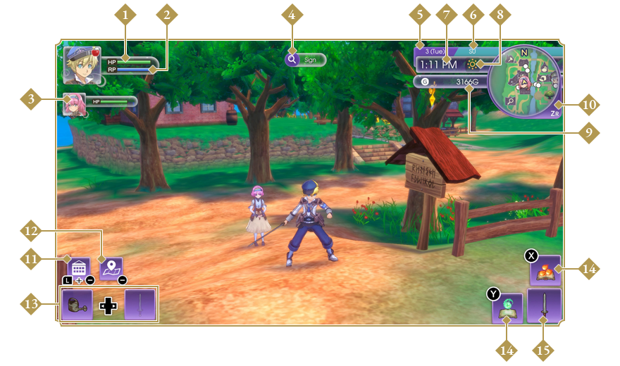
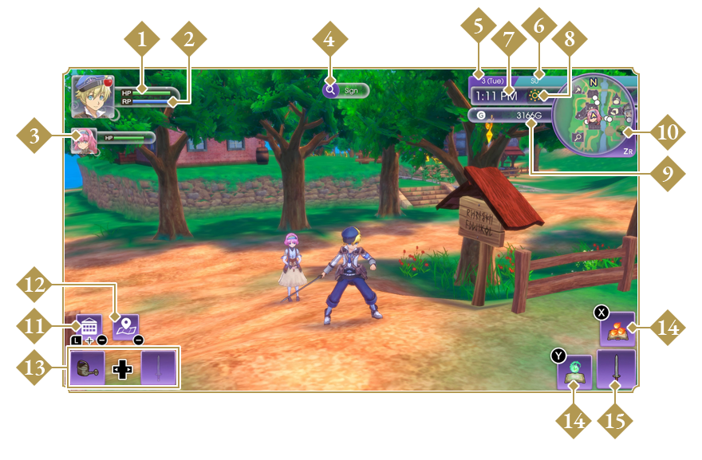
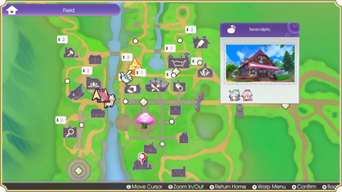
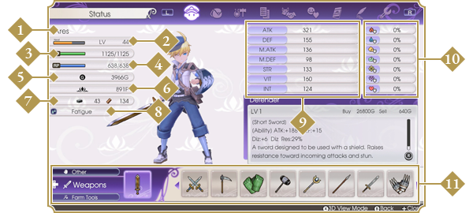

Bring up the map with the − Button to see building and dungeon locations, as well as who is in what building. You can warp to previously visited locations with the Y Button. Select the diamond-shaped icons to warp around Rigbarth itself.

Press the X Button on the map screen to warp from your current location to your room.
Press the + Button to open the Camp Menu and check your stats, items, requests, and game settings.

Press the L Button on the field screen to open a shortcut known as the L Pocket. Customize the L Pocket on the Bag page to register weapons, farm tools, accessories, rune abilities, food, and various other items for easy access.